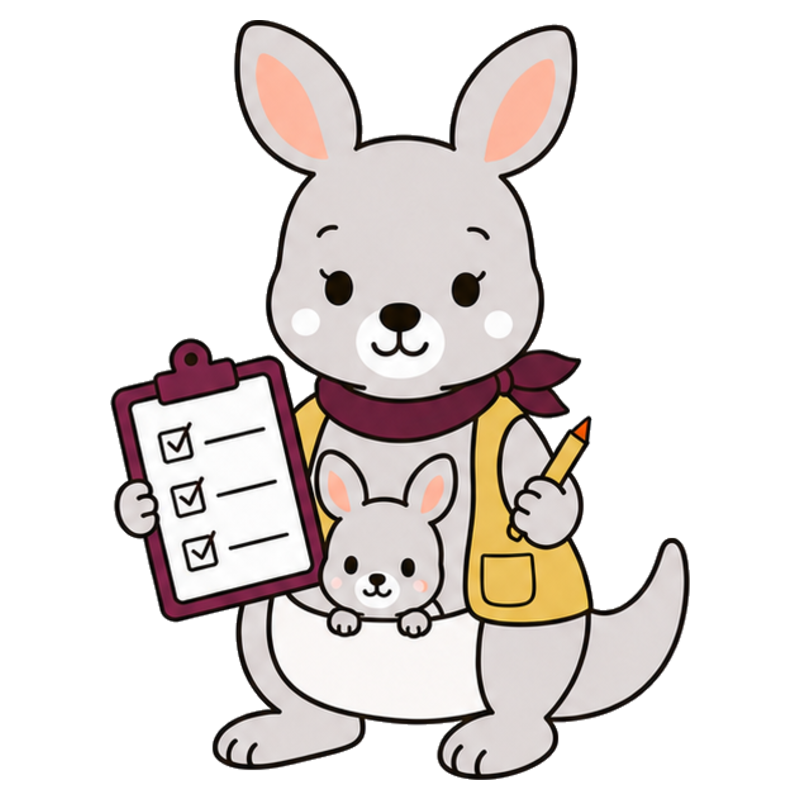
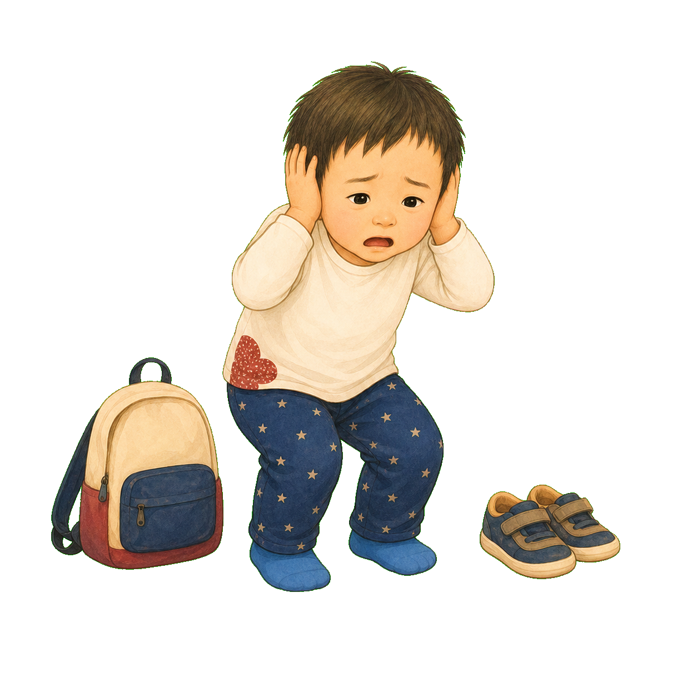

きんようび・夕方
いやーっ！
げんかんで、音も くつも
ぜんぶ いやになった。
ママが きいても、ぼくは うまく いえない。
ぼくにも、わからない。

2
「おなかが すいた？」
「くつが いや？」
「わがまま なの？」
その しゅんかんだけでは、
こたえは ひとつに きまらない。
3
ぽけっとさんは、
こたえを いわなかった。
「きょうを なおす前に、
小さな できごとを あつめよう」
いつ・どこで・その前に何があった？
からだ・食事・睡眠・音・予定の変化は？
げつようび
いつもの 園。
いつもの おむかえ。
おひるね ○ ごはん ○
帰ってからも、ゆっくり。
この日は「いや！」が
小さかった。
かようび
ホールに たくさんの 人。
マイクの 大きな 音。
先生が「音のとき、耳をふさいだ」と
記録してくれた。
ぼくの中に、
音の つかれが のこった。
すいようび
たのしい うんどう。
そのあと、おひるねは みじかめ。
たのしい日にも、からだは がんばっている。
楽しいと 疲れない、ではなかった。
からだの でんちは、
すこしずつ へっていた。
もくようび
おむかえが、いつもより おそい。
帰る みちも、ちがった。
小さな へんこうでも、次が見えないと
ぼくは ずっと がんばっている。
「ちがう」が、
もう ひとつ かさなった。
きんようび
大きな音。みじかい昼寝。
いつもと ちがう 予定。
ひとつなら だいじょうぶでも、
いくつも かさなると——
げんかんで、ぼくの「もう いっぱい」が
あふれたのかもしれない。
いっぱい
9
ぽけっとさんが、
一週間を ならべた。
「いや！」の数を 数えるだけではなく、
何も起きなかった日との ちがいも 見る。
犯人を きめるんじゃない。
ぼくが 楽になる 手がかりを 見つける。
○火
音水
疲木
変金
!
10
つぎの 金ようびは、
先に「やすむ」を つくった。
帰る予定を 絵で知らせる。
げんかんでは 話しかけすぎない。
静かな場所、水分、ひと休み。
「いや！」の あとではなく、
あふれる前に たすける。
つぎの きんようび
ぼくは、げんかんで
やすむカードに 手を のばした。
「いや！」が出ても だいじょうぶ。
記録は ぼくを おとなしくするためじゃない。
ぼくの「もう いっぱい」を、
早く いっしょに 気づくため。
きょうだけでは 見えないことも、
つなげると 見えてくる。
ぼくの 毎日は、
ぼくを たすける 手がかりだった。
おはなしの あとに
記録は、原因を決めつけるためではありません。
行動があった日だけでなく、なかった日も含めて、時刻・場所・直前の出来事・睡眠・食事・体調・感覚刺激・予定変更・周囲の対応を短く残します。数日から数週間を並べると、単独では見えにくい「重なり」が仮説になります。仮説は家庭・園・学校・支援職で共有し、安全を確かめながら小さく環境を変えて検証します。痛みや急な行動変化がある場合は、記録だけで判断せず医療職にも相談してください。
HugMapで気づきをつなぐ